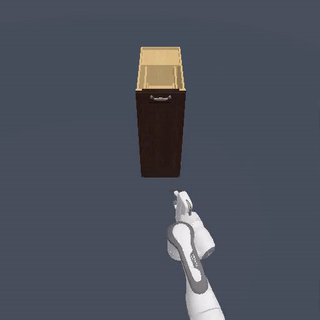
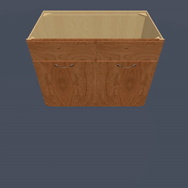
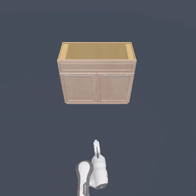
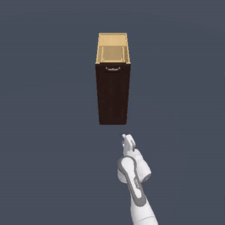
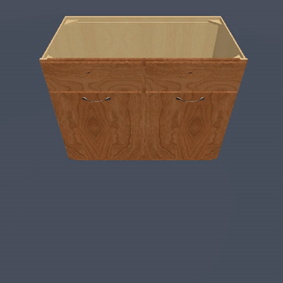
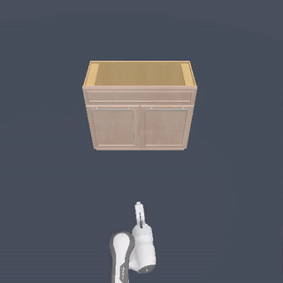

PointPatchRL is a method for Reinforcement Learning on point clouds that harnesses their 3D structure to
extract task-relevant geometric information from the scene and learn complex manipulation tasks purely
from rewards.
While images are a convenient format for perceiving the environment for RL, they often complicate
extracting important geometric details, especially with varying geometries or deformable
objects.
In contrast, point clouds naturally represent this geometry and easily integrate positional and
color data from multiple camera views.
However, while deep learning on point clouds has seen many recent successes, RL on point clouds is
under-researched, with usually only the simplest encoder architecture considered in the literature.
We introduce PointPatchRL (PPRL), a method for RL on point clouds that builds on the common
paradigm
of dividing point clouds into overlapping patches, tokenizing them, and processing the
tokens
with transformers.
PPRL provides significant improvements compared with other point-cloud architectures previously used for
RL.
We then complement PPRL with masked reconstruction for representation learning and show that our
method outperforms strong model-free and model-based baselines on image observations in complex
manipulation
tasks containing deformable objects and variations in target object geometry.

 




